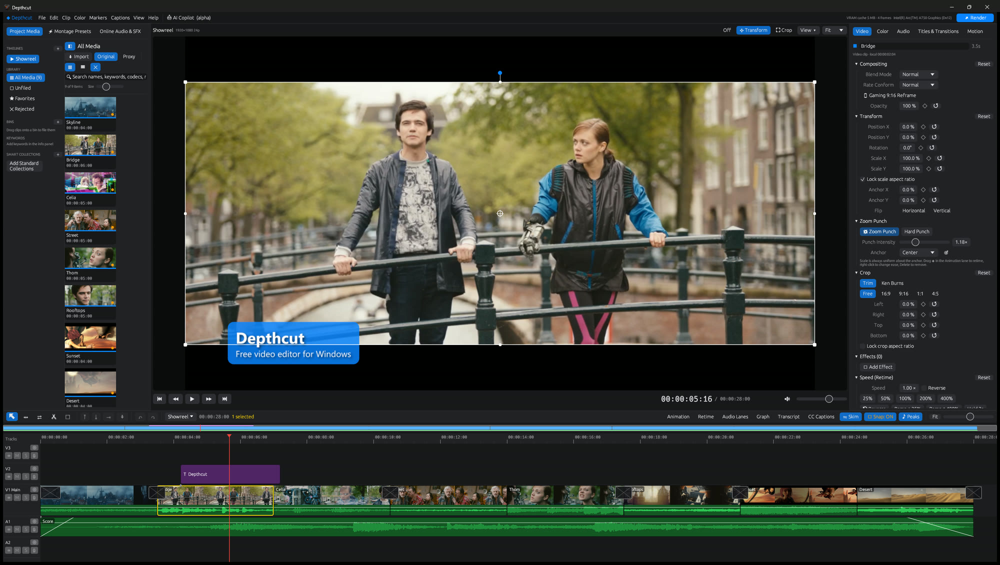

Magnetic timeline
Ripple editing, connected clips, compound clips and secondary storylines. Blade, trim, slip and slide, plus auditions, multicam and three-point edits. Unlimited undo, with an autosave every 30 seconds.
Alpha v0.1.1 for Windows 10/11
Depthcut is built for gaming montages and short-form edits. It has a magnetic timeline, color grading, a real audio mixer and auto-captions, and exports with your NVIDIA, AMD or Intel encoder. No subscription and no watermark.

One developer, built since 2022, written in Rust. Effects, color and scopes render in GPU compute shaders.
Ripple editing, connected clips, compound clips and secondary storylines. Blade, trim, slip and slide, plus auditions, multicam and three-point edits. Unlimited undo, with an autosave every 30 seconds.
Zoom punch with one key, beat detection with pinned velocity curves, and Medal kill sync plus by-ear VOD kill scanning. Includes 9:16 split-crop and 16 stackable CS2 and Valorant presets across RSMB, impact shake, velocity and CC.
Color management, wheels, curves, HSL qualifiers and a node graph, plus stacked clip masks (feather, expand, Bézier), Behind Subject track mattes and native RGBA alpha media with ProRes 4444 proxies. Also .cube LUTs, HDR export and GPU scopes.
Buses with automation and LUFS metering, EQ, dynamics and restoration, −14 LUFS normalize and an always-on true-peak limiter for clean AAC/PCM exports. Look-ahead ducking lowers music before voice, matching preview to export.
Point, region and planar trackers, camera stabilization and scene-cut detection. Keyframes on every parameter, a graph editor with Bézier handles, roto masks, beat-pinned speed ramps and optical-flow retiming.
AV1, HEVC and H.264 through NVENC, AMF or Quick Sync. The app tests each encoder at start-up and lists only the ones that work. It falls back to x264 when there's no GPU encoder, and has a render queue.
Offline Whisper speech-to-text on your GPU, word-by-word caption styles and .srt import and export. Cut the edit by deleting words, filler words and pauses in the transcript.
FCPXML import and export, CMX 3600 EDL and OpenTimelineIO, plus AAF export for Avid and Pro Tools alpha. VST3 and CLAP plug-ins on mixer buses alpha.
No account, no subscription, no watermark and no locked features. Open source under MIT or Apache-2.0. Your projects and AI keys stay on your PC.
Footage: Tears of Steel and Sintel, © Blender Foundation, mango.blender.org and durian.blender.org, CC BY 3.0.
Tested on Intel Arc A750, NVIDIA RTX 3080 and AMD RX 7800 XT. Linux builds from source but is experimental. macOS isn't supported yet.
Depthcut is made by Moodi Depth, one developer working with help from AI. If it saves you a subscription, a coffee helps.